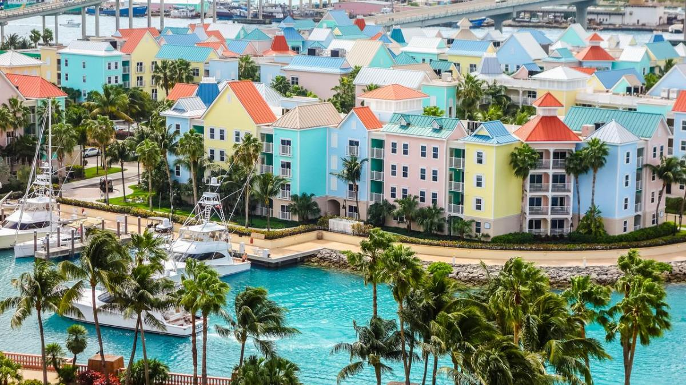
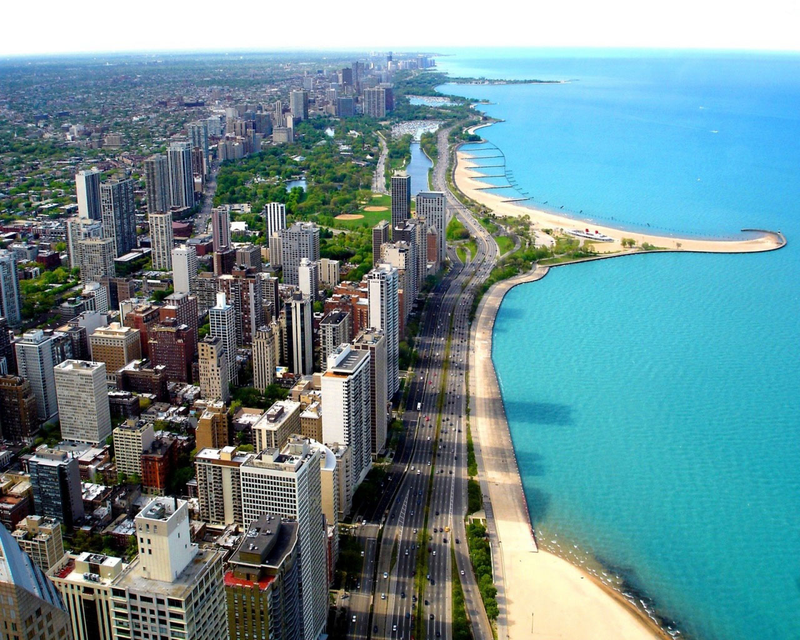

Nasau

es la capital y el centro comercial y cultural de las Bahamas.
Nasáu fue fundada en 1670 por colonos británicos y nombrada Charles Town, llamada así en honor al rey Carlos II de Inglaterra. La ciudad era utilizada como asentamiento pirata y las islas circundantes como escondites, por lo que fue destruida en 1684
Tras ser reconstruida en 1695 por el gobernador Nicholas Trott, fue rebautizada con el nombre actual, en honor a la corona neerlandesa, que en esa época gobernaba la inglesa, escocesa e irlandesa, representada por Guillermo III de la casa neerlandesa de Orange-Nassau.4
Miami

Miami es una ciudad-puerto ubicada en el sureste de Florida, Estados Unidos, alrededor del río Miami, entre los Everglades y el océano Atlántico.
Es considerada una ciudad global de importancia en las finanzas, el comercio, los medios de comunicación, entretenimiento, artes y comercio internacional.6 Es sede de numerosas oficinas centrales de compañías, bancos y estudios de televisión. Es, también, centro internacional del entretenimiento popular en televisión, música, moda, cine y artes escénicas.
Ushuaïa Ibiza Beach Hotel
Ushuaïa es considerado como una de las mejores discotecas del mundo por la revista DJ Magazine, donde se ha mantenido en su Top 10 desde 2015. El club tiene una capacidad de 4.000 personas, y es uno de los clubes más grandes y famosos de Ibiza, junto con Amnesia Ibiza.
Esta discoteca ha sido anfitrión de muchas celebridades del mundo de los DJs incluyendo David Guetta, Armin van Buuren, Axwell, Sebastian Ingrosso, Avicii, Hardwell, Martin Garrix, Oliver Heldens y muchos otros.